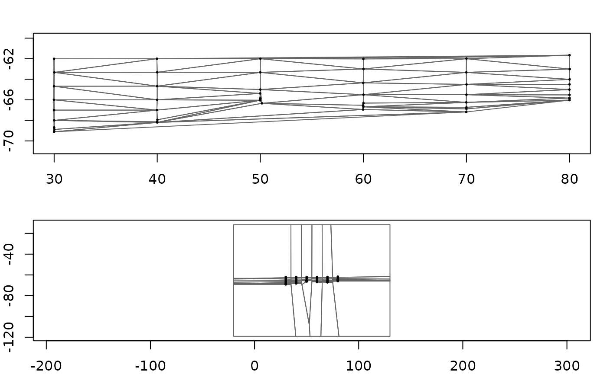
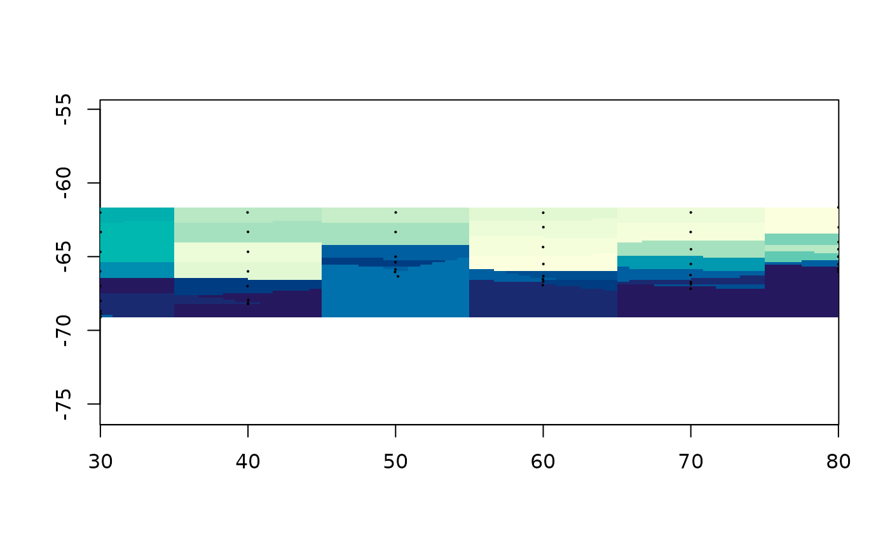

Triangles, tiles, and the weights between them
Michael D. Sumner
2026-09-09
Source:vignettes/triangulation.Rmd
triangulation.RmdTwo of the methods in this package come from tessellating the plane rather than fitting anything: cut the space up around the data points, then let each piece answer for the region it covers. They give the two simplest honest answers there are, and the arithmetic behind both fits on one page.
library(guerrilla)
library(readxl)
bw <- read_excel(system.file("extdata", "BW-Zooplankton_env.xls",
package = "guerrilla", mustWork = TRUE))
lonlat <- as.matrix(bw[, c("Lon", "Lat")])
val <- bw$temp
g <- grid_spec(lonlat, crs = "EPSG:4326")The two tessellations
GEOS builds both, and they are duals of each other.
library(geos)
pts <- as_geos_geometry(wk::xy(lonlat[, 1], lonlat[, 2]))
coll <- geos_make_collection(pts)
op <- par(mfrow = c(2, 1), mar = c(2, 2, 2, 1))
plot(geos_unnest(geos_delaunay_triangles(coll), keep_multi = FALSE),
col = NA, border = "grey40", main = "Delaunay triangles")
points(lonlat, pch = 16, cex = 0.4)
plot(geos_unnest(geos_voronoi_polygons(coll), keep_multi = FALSE),
col = NA, border = "grey40", main = "Voronoi tiles")
points(lonlat, pch = 16, cex = 0.4)
par(op)They answer different questions. A Delaunay triangle has three data points at its corners, so a value inside it can be a blend of three. A Voronoi tile has one data point in it and consists of everywhere closer to that point than to any other, so a value inside it can only be that one point’s value.
Which means the Voronoi tessellation is nearest neighbour:
plot(grid_voronoi(lonlat, val, g))
points(lonlat, pch = 16, cex = 0.3)
Barycentric coordinates
The Delaunay case needs one idea. For a point inside a triangle, the barycentric weights say how much of each corner the point is made of. They sum to one, and they are all non-negative exactly when the point is inside – so the same three numbers are both a point-in-triangle test and the interpolation rule.
tri <- cbind(c(0, 1, 0), c(0, 0, 1))
bary_weights(tri, rbind(c(0.25, 0.25), c(1/3, 1/3), c(1, 1)))
#> [,1] [,2] [,3]
#> [1,] 0.5000000 0.2500000 0.2500000
#> [2,] 0.3333333 0.3333333 0.3333333
#> [3,] -1.0000000 1.0000000 1.0000000The first point is a quarter of the way in from two corners; the second is the centroid, made equally of all three; the third is outside, which shows up as a negative weight rather than as a separate test.
The whole of bary_weights() is Cramer’s rule on a two by
two system, six lines of arithmetic. Reading it is a better use of ten
minutes than reading any description of it, including this one.
Interpolating is then the weighted sum of the corner values:
tri_grid <- grid_barycentric(lonlat, val, g)
plot(tri_grid)
Inside each triangle the surface is the plane through its three
corner values, so the result is continuous, passes exactly through the
data, and invents nothing beyond it. Cells outside the convex hull are
in no triangle and stay NA – unlike the Voronoi fill above,
which covers everything. That is convenient, and it is also nearest
neighbour’s main way of lying to you: a cell far from any data still
gets a confident answer.
Two engines, one answer
grid_barycentric() normally gets its result from one
call to geometry::tsearch(), which finds the containing
triangle for every cell and its weights in a single pass of C. That is
the right way to compute it and the wrong way to learn it, so the same
job is also written out in R: find_triangle() to locate
each cell, bary_weights() to weight it.
slow <- grid_barycentric(lonlat, val, g, engine = "R")
ok <- !is.na(slow$values)
max(abs(slow$values[ok] - tri_grid$values[ok]))
#> [1] 6.605827e-15The readable one is much slower and agrees to floating point. It is not there for speed, it is there so the claim “this is what the C is doing” can be checked rather than believed.
find_triangle() is worth a look on its own, because the
search is the part people assume is hard. It asks GEOS which triangles a
point could be in, using an STRtree index, then uses
bary_weights() to decide which one it actually is.
triangles <- geometry::delaunayn(lonlat)
find_triangle(lonlat, triangles, rbind(c(50, -65), c(0, 0)))
#> [1] 51 NAThe second point is nowhere near the data, and gets
NA.
The long way round, and a bug it revealed
Three points determine a plane, and least squares through exactly
three points is that plane. So fitting value ~ x + y inside
each Delaunay triangle must give the same surface as barycentric
interpolation:
lm_grid <- grid_facet_lm(lonlat, val, g)
both <- !is.na(lm_grid$values) & !is.na(tri_grid$values)
max(abs(lm_grid$values[both] - tri_grid$values[both]))
#> [1] 5.417888e-14It does, and it is enormously slower, and seeing that happen once is worth the wait.
This package used to offer that as facets(), with a
Dirichlet variant alongside the Delaunay one. The Dirichlet variant was
not doing what it looked like it was doing. A Voronoi tile holds exactly
one point, so the per-tile lm(value ~ x + y) had one
observation and three parameters. It fitted an intercept, predicted that
single value across the whole tile, and produced – bit for bit – nearest
neighbour, computed by running a linear model per tile in an R loop.
Brute force nearest neighbour, one line, gives exactly the same numbers:
at <- grid_xy(g)
nearest <- apply(at, 1, function(p) which.min((lonlat[, 1] - p[1])^2 +
(lonlat[, 2] - p[2])^2))
identical(grid_voronoi(lonlat, val, g)$values, val[nearest])
#> [1] TRUEfacets() is still exported and still works, marked
superseded. The lesson is not that it was slow. It is that a method can
be named after its machinery rather than its answer, and then nobody
notices for years what answer it gives. Every function added in this
package is named for what it computes, because of this one.
The same thing, from a mesh
A grid is one particular mesh: a regular one, with values at the vertices. So turning an arbitrary mesh of triangles into a grid is resampling one mesh onto another, and it is the same barycentric interpolation with the triangulation step already done.
mesh <- structure(list(vb = rbind(t(cbind(lonlat, val)), 1),
it = t(geometry::delaunayn(lonlat)),
primitivetypes = "triangle"),
class = c("mesh3d", "shape3d"))
plot(mesh_raster(mesh, grid = g))Same numbers, because it is the same triangles:
identical(mesh_raster(mesh, grid = g)$values, tri_grid$values)
#> [1] FALSEmesh_raster() runs the argument backwards from
everything else here, which is why it is worth having. Given points it
triangulates them; given a mesh it already has the triangles and only
has to interpolate. Anything or can hand you as a mesh3d
can go straight onto a grid.